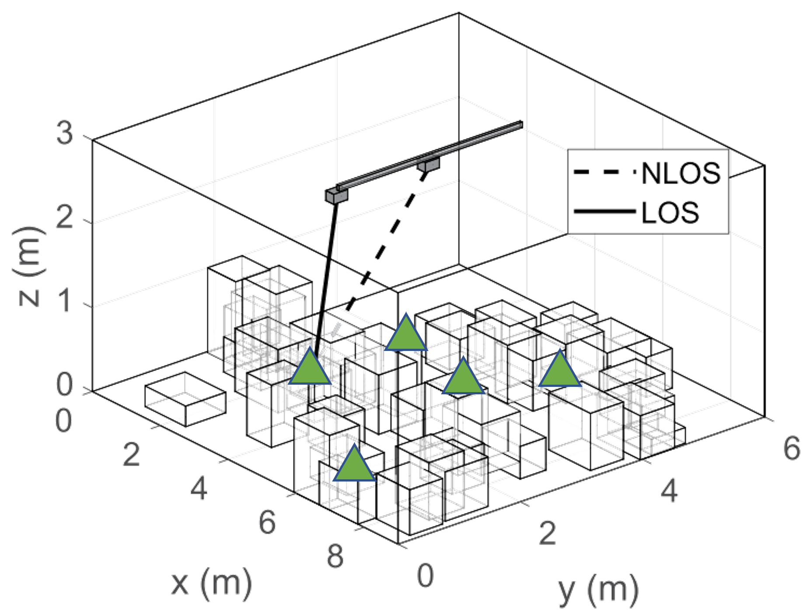
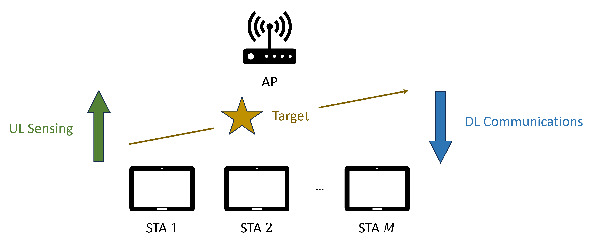

GNAN Lab @ Georgia Tech
Next-G Sensing and Communications
Research Thrusts
1. New Paradigm for Wi-Fi over Multiple Frequency Bands
As recent Wi-Fi networks become denser and more congested, a single frequency band may fail to provide sufficient quality of service (QoS), particularly under scenarios with stringent requirements that demand high throughput and low latency, which necessitates the employment of multiple frequency bands. Therefore, one of our goals is to develop novel algorithms and protocols in support of a new and powerful paradigm for Wi-Fi over multiple frequency bands in terms of various emerging applications, including access point (AP) mobility, multi-link operation (MLO), and integrated sensing and communications (ISAC). For AP mobility, we address a unique line-of-sight (LOS) discovery problem with both microwave (μWave) and millimeter-wave (mmWave) frequencies through both heuristic algorithms and supervised learning solution. Accordingly, we implement a system-level solution which enables the mobile AP to properly move in order to maximize the number of LOS connections between itself and stations (STAs). For MLO, we investigate how the interfaces over multiple frequency bands in each multi-link device (MLD) should work in order to boost Wi-Fi network performance. Specifically, we focus on two modes: simultaneous transmit and receive (STR) and enhanced multi-link single-radio (EMLSR). Regarding STR, we create model-free methods for traffic steering through both heuristic algorithm and deep reinforcement learning (DRL) solution. On the other hand, regarding EMLSR, we create a fairness-aware heuristic algorithm for link selection. For ISAC, we study a promising design which allows Wi-Fi devices to conduct both sensing and communications. Particularly, we devise an innovative strategy to help the AP determine between sensing and communications along with a selection of STAs that should be involved through discrete convex optimization. Overall, we have established a solid foundation of the new paradigm for Wi-Fi over multiple frequency bands, which facilitate a more versatile nextG wireless network for future.
AP Mobility
MLO
ISAC
2. Enhancing the Energy Efficiency of Wi-Fi Connectivity
Wireless communication technologies have been making steady progress to support ultra-dense deployments. Among the competing wireless technologies, Wi-Fi is fast emerging as one of the prime choices for wireless connectivity for the Internet of things (IoT), particularly for indoor and medium-range applications (<100 meters). Across the spectrum of use cases and applications, the power consumed by the Wi-Fi interface has always been a topic of interest and concern. This is more pronounced in low-power devices such as IoT sensors where the Wi-Fi interface can consume up to 78% of the total power while just maintaining connectivity with the access point. In this research thrust, we focus on studying and enhancing the energy efficiency of Wi-Fi connectivity particularly in lower-power battery-operated IoT devices. To this end, we first experimentally analyze a state-of-the-art low-power Wi-Fi module and propose optimizations to the legacy Power Save Mechanism (PSM) when operating over TCP. We have also developed comprehensive (open-source) simulation models for PSM and Target Wake Time (TWT) in ns-3. The current research focus is on energy efficient channel access schemes in dense deployments utilizing TWT and OFDMA, two technologies that are central to Wi-Fi 6 and beyond.